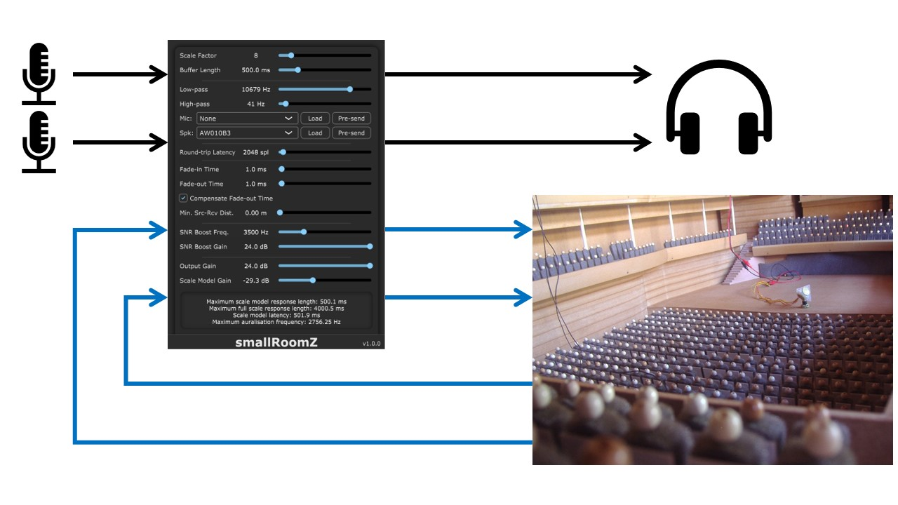

The plug-in documentation is available in the user-manual.pdf.
The plug-in can be used in any DAW that supports tracks with 4 input and output channels. Inputs 1 and 2 are supplied with the live input of the signal to be played in the scale model. Inputs 3 and 4 are the returns from scale model. Outputs 1 and 2 are the final auralisation while outputs 3 and 4 are the signal to be sent to the scale model.
Note: If only a single source and microphone are being used in the scale model these should be routed to the inputs 1 and 3 respectively. Similarly, output 1 will be the auralisation while output 3 is the scale model send signal.
